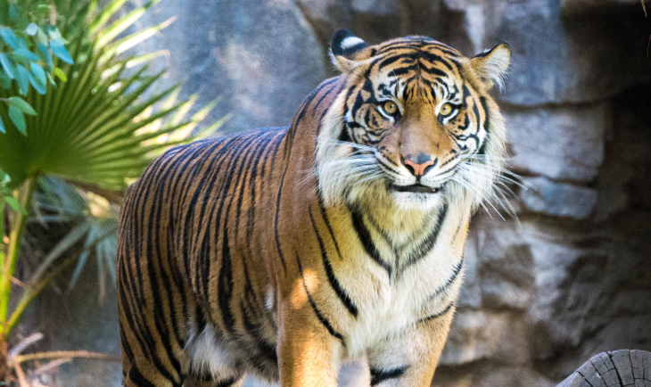

トラ
ゾウ（象）は、哺乳綱ゾウ目（長鼻目）ゾウ科の総称である。「ゾウ」は漢字「象」の音読み(呉音)。「象」の字は、古代中国にも生息していたゾウの姿にかたどった象形文字であるとされる。これとは別に、日本にはゾウがいないにもかかわらず、日本語には「きさ」という古称があり、『日本書紀』では象牙を「きさのき」と呼んでいる。長い鼻、大きな耳が特徴。首が短く、立ったままでは口を地面に付けることができない。
ゾウ（象）は、哺乳綱ゾウ目（長鼻目）ゾウ科の総称である。「ゾウ」は漢字「象」の音読み(呉音)。「象」の字は、古代中国にも生息していたゾウの姿にかたどった象形文字であるとされる。これとは別に、日本にはゾウがいないにもかかわらず、日本語には「きさ」という古称があり、『日本書紀』では象牙を「きさのき」と呼んでいる。長い鼻、大きな耳が特徴。首が短く、立ったままでは口を地面に付けることができない。